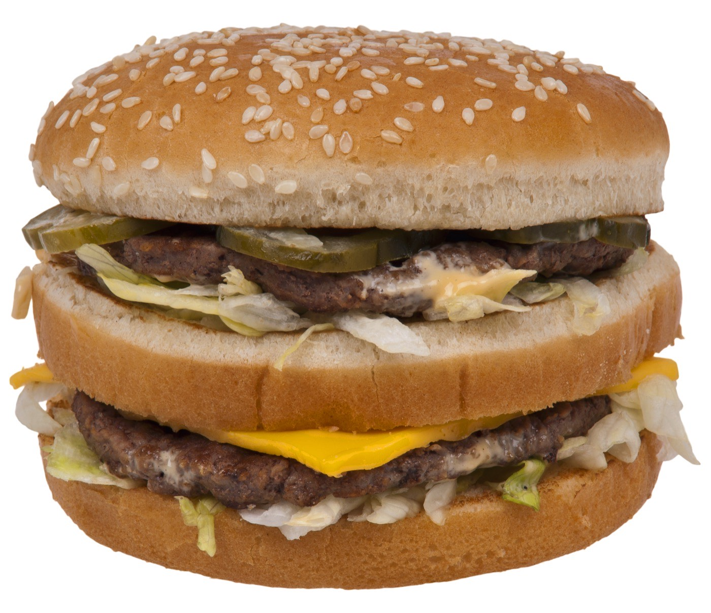

Executive Summary
This article reads three documents that appeared within three days of each other in late September 2026. On September 29 Reuters published an investigation of McDonald's price recommendation engine. On October 1 McDonald's posted a rebuttal headed "AI Does Not Set Prices at McDonald's." On October 2 a consumer class action was filed in the Northern District of Illinois. All three describe the same machine, and they describe it differently.
Lay them on top of each other and the dispute sits on data movement rather than on agreement. Quoting the franchise disclosure document, the complaint says the parent company requires franchisees to run its point-of-sale system, receives the transaction-level records on its own servers, and bars franchisees from disclosing that data to anyone else without approval. Tying those clauses together, the complaint concludes that the parent is the only channel through which one franchisee's data can reach a rival's price. McDonald's answers that the tool offers recommendations rather than prices, and that people make the final call.
That much is what the three documents say. What follows is not in the documents: this article reads them as conditions on a data pipeline. The question of how much of someone else's numbers may go into a model already has an answer written in figures, and the current answer is the third draft of it. A safety zone issued jointly by the U.S. antitrust agencies in 1996 put the age of exchanged data at three months; in 2023 both agencies withdrew that safety zone, citing advances in machine learning; a 2025 consent decree in a rental-housing case rewrote the number as twelve months. This article does not rule on whether the engine pushed prices up or down. It looks at what went into the model.
3 months → 12 months
How long a rival's confidential data must sit before a model may use it
The 1996 DOJ–FTC joint safety zone and the 2025 RealPage consent decree. A withdrawal sits between them
95%
Share of U.S. McDonald's restaurants owned and run by separate legal entities
13,706 U.S. restaurants per the FY2025 10-K. Horizontal collusion requires competitors
+28%
Margin increase in markets where both rivals adopted algorithmic pricing
German gasoline retail evidence. Markets with a single adopter showed no significant change (Assad et al., JPE 2024)
~90%
Alleged rate at which hotels followed the algorithm's recommendations
Cornish-Adebiyi. The power to reject or override did not justify dismissal
Three Documents in Three Days
On September 29, 2026, Reuters published "Inside McDonald's push to have AI price your Big Mac." The piece states its methods in the text: reporters reviewed August screenshots of the pricing engine as franchisees see it, and interviewed nine people with direct knowledge of the strategy. Its central claim is that McDonald's uses machine learning to continuously analyze millions of daily transactions across more than 14,000 U.S. restaurants and produce, per restaurant and per item, what the company calls an optimal price. The screens carry messages such as "Your restaurant is showing MEDIUM SENSITIVITY to Price."
Two days later, on October 1, McDonald's posted a document titled "Separating Fact from Fiction: AI Does Not Set Prices at McDonald's." It pairs rumor with fact across six FICTION/FACT entries, and it closes on one sentence.
"AI does not set McDonald's menu prices. People do." Source: McDonald's, "Separating Fact from Fiction," 2026-10-01.
The next day, October 2, a consumer class action was filed in the Northern District of Illinois. It is Thomas v. McDonald's USA, LLC, No. 1:26-cv-12149, and it names two defendants, McDonald's USA and McDonald's Corporation. The body runs to 132 numbered paragraphs and pleads four counts: two under Section 1 of the Sherman Act (price fixing and information exchange), one under the Illinois Antitrust Act, and one under the Illinois Consumer Fraud and Deceptive Business Practices Act. The plaintiff demands a jury trial.
The scale is worth putting down first. Per the FY2025 annual report McDonald's filed with the SEC, there are 13,706 U.S. restaurants, and 95% of them are owned and operated by separate legal entities rather than by the parent. That is how many recipients one engine sends recommendations to. Because horizontal collusion is something that happens only among competitors, that 95% is the starting condition of the suit.
The order of the three documents matters. The complaint takes its factual skeleton from the Reuters piece, and it says so. Paragraph 79 states that McDonald's use of the tool in pricing was "not widely known until Reuters published an article describing it on September 29, 2026." Paragraphs 49, 55, 57, 58, 59, 62 and 64 all cite the Reuters reporting by footnote. The starting point of this case, in other words, is not the complaint but a story filed three days earlier. That is why this article keeps the complaint, the Reuters piece and the rebuttal open side by side rather than working from secondary coverage.
The timeline below traces what led up to those three documents. Everything from the 2019 acquisition through the January 2026 change in standards is background; the ten days marked in bold are the stretch this article reads.
Sources: Reuters (2026-09-29), the McDonald's rebuttal (2026-10-01), the Thomas v. McDonald's USA, LLC complaint (2026-10-02), and the public documents the complaint cites.
1.1Two Other Cases Are Easy to Confuse With This One
The $18 Big Mac meal that drew attention in 2023 is not an example this plaintiff relies on. George Michell, the Connecticut franchisee who set that price, sued the parent company separately in the Eastern District of New York on May 9, 2024, alleging the price came from a recommendation by "industry-standard consultants." A consumer suing the parent and a franchisee suing the parent point in opposite directions. Reuters wrote that it could not independently confirm what the tool recommended to Michell, and McDonald's has contested that suit, responding that Michell repeatedly breached his franchise agreement.
One more case is easy to confuse with this one by name. Deslandes v. McDonald's USA, LLC, against the same company, concerned no-hire clauses among franchisees and is entirely separate from the pricing suit. The fact that both sit in the Seventh Circuit does come back in Section 4.
The Complaint Lines Up Three Clauses From the Disclosure Document
The strongest passage in the complaint is not the one describing the algorithm. It is the place where paragraphs 50 and 51 set three clauses of the franchise disclosure document (FDD) next to one another: an obligation to transmit, unlimited parent-company access, and a bar on disclosure between franchisees. As quoted in the complaint, the FDD requires franchisees to run a point-of-sale system the parent owns, and the transaction-level records that system generates travel to the parent's servers. The first two clauses sit in a single sentence.
"The restaurant's transaction-level information generated by the POS, including sales, transactions, and product mix information, is stored on your server hardware and transmitted to McDonald's and held on its servers. McDonald's has independent access to this information and there are no contractual limits on its right to access such information." Source: the FDD as quoted at ¶50 of the complaint. This article could not open the FDD itself.
The third clause runs the other way. Paragraph 51 says a franchisee may not disclose its own sales data to anyone else without McDonald's approval. Mobile app order records fall under the same rule, and franchisees file monthly profit-and-loss statements with the parent. One document thus mandates collection and blocks lateral disclosure, and the complaint ties the two together in a single sentence.
"In other words, McDonald's is the only channel through which one franchisee's data can inform a rival's price." Source: ¶51 of the complaint.
This is a reading of contract language rather than an inference about an algorithm. Ask what pulled the data toward a center and the complaint answers with the clauses in that document, not the model. Two caveats go with it all the same. This article could not open the FDD directly, so the quoted language above is the complaint's rendering of it. And "only channel" is a sentence the plaintiff wrote, not a fact any court has found.
The diagram below shows the data path as the complaint describes it. Seeing the shape in one frame — inward paths open, lateral paths closed — makes it clear where the fight in this case actually sits.
Source: Thomas v. McDonald's USA, LLC complaint ¶¶50–53, 107. This redraws the franchise disclosure clauses as the complaint quotes them; no court has found these facts.
2.1Optional on Paper, Expected in Practice
The same FDD lists an annual fee for the "Pricing Engine." Paragraph 52 of the complaint notes that the document marks the fee as optional, then says in the next breath that franchisees are expected to use the tool. Reuters adds a line here: it confirmed an internal notice stating that from January 2026 McDonald's began requiring franchisees, as one of its new business standards, to "constructively engage with McDonald's-approved pricing consultants and tools." Paragraphs 63 and 64 cite that standard alongside Reuters reporting that the parent keeps detailed records of how far each restaurant departs from the recommendations.
Anyone who handles data has reason to read this passage, because it shows how the form of consent behaves under pressure. Consent to collection marked optional on a form changes character in practice once it meets an evaluation criterion. Pebblous covered a comparable structure in a case where data contribution tiers were tied to price; there the contributor chose a tier, whereas here the contribution feeds an assessment.
2.2The Complaint and Reuters Disagree on Whether the Parent Wants Higher Prices
On the question of what the parent company wants, the complaint and Reuters draw opposite conclusions from the same facts. Paragraph 26 states that McDonald's takes 4–5% of franchisee sales as royalties and that advertising contributions and rent are also tied to sales; paragraph 11 then says "optimized" prices raise McDonald's revenue. Reuters reads that structure the other way. The parent takes a percentage of gross sales regardless of any individual restaurant's margin, which can make it prefer price cuts that bring in traffic and volume, while franchisees, who bear labor and rent directly, have the stronger incentive to raise prices.
Sales are price times quantity. Sales-linked royalties on their own establish neither that the parent wants increases nor that it wants cuts. This article does not settle which reading is right; it lets both stand.
2.3The Terms of Use Flagged the Risk First
The terms of use on the pricing portal Reuters reviewed in August warn users that they "may be competitors of one another" and urge them to understand and comply with antitrust law. The same terms state that franchisees "always have the freedom to determine their final prices." William Kovacic, a former FTC commissioner, told Reuters the wording amounts to an acknowledgment that there is "something that could be problematic here." McDonald's said it takes antitrust compliance seriously and that the guidance in its terms is not evidence of anticompetitive conduct. Paragraph 59 of the complaint picks up this exchange verbatim.
McDonald's Own Sentences, Inside the Complaint's Quotation Marks
Read paragraphs 30 through 54 straight through and a pattern emerges: nearly every sentence inside quotation marks comes from a document McDonald's produced itself. Franchise agreements, disclosure documents, a comment letter to a regulator, an investor presentation, SEC filings, and an open letter from the president of McDonald's USA. About all the plaintiff brought in from outside is the Reuters story and the record of another case. This section looks at how those sentences get used in two directions.
The first direction runs through the Investor Day of September 23, 2026. As the complaint quotes it, chief marketing officer Morgan Flatley introduced the "menu pricing engine" as an "industry-leading tool" that delivers "pricing recommendations down to the restaurant and item level" based on "insights from millions of transactions and broad market data." At the same event, the complaint says, chief information officer Brian Rice observed that a tool is "only as good as the data that feeds it" and then added the following.
"Built a standard restaurant data lake" capturing "billions of data points daily. … This creates an insurmountable advantage and a continuous learning loop that competitors can't replicate." Source: the remarks as quoted at ¶54 of the complaint. This article could not open the Investor Day transcript itself.
That was six days before the Reuters story. A sentence a data organization uses to impress investors landed inside the quotation marks of an antitrust complaint within a week. The sentence explaining why pooling data is an advantage and the sentence arguing why that pooling is a problem draw on exactly the same material.
The second direction is the more interesting one. What the complaint quotes most heavily is the body of independence language McDonald's has built up over decades to limit its own liability. Because horizontal collusion requires competitors, the plaintiff has to establish that franchisees compete with one another. Every sentence used for that purpose belongs to McDonald's.
The complaint draws that showing from three documents McDonald's wrote and one operating fact: the standard franchise agreement, the franchise disclosure document, a 2023 public comment letter to the Federal Trade Commission, and the fact that the parent runs company-operated restaurants in the same trade areas as its franchisees. The first three say in plain terms that the parent and its franchisees are separate businesses, and the complaint applies those sentences directly to the requirement that franchisees be rivals of each other. The fourth supports the claim that the parent is one of those rivals.
| Document | What McDonald's wrote | How the complaint uses it |
|---|---|---|
| Standard franchise agreement (¶32) | A heading reads "Franchisee Not an Agent of McDonald's," and the text designates franchisees "independent contractors" | Support for treating parent and franchisee as separate actors |
| Franchise disclosure document (¶36) | "You will not receive an exclusive territory. You may face competition from other franchisees, from outlets that we own, or from other channels of distribution that we control" | Support for treating franchisees as rivals of each other |
| 2023 comment letter to the FTC (¶38) | "Some franchisors grant franchisees exclusive territories; McDonald's does not. This incentivizes franchisees to maintain high restaurant standards, since otherwise they will lose customers to a nearby restaurant" | Support for the claim that the competition is by design |
| Company-operated restaurants (¶33) | Restaurants the parent owns and runs itself operate in the same trade areas as franchised ones | Support for the claim that the parent is one of the rivals |
Source: Thomas v. McDonald's USA, LLC complaint ¶¶32, 33, 36, 38.
At that same Investor Day, according to paragraph 44, Flatley said franchisees "retain control over independent pricing decisions." The open letter of May 29, 2024 from Joe Erlinger, president of McDonald's USA, makes the same point: "our franchisees, who own and operate more than 95% of our restaurants nationwide, set the menu prices in their restaurants."
Jumping from here to "so the company lied" misreads the case. Issuing a recommendation and setting a price are different acts, and the two statements can both be true at once. That compatibility is the real issue. A court will have to decide what a recommendation still is once compliance is tracked and weighed at renewal.
Documents assembled for one purpose becoming inputs to a different judgment is a familiar shape in data work too. Pebblous has written about a product that infers a person's skill history from work records; that story was about records finding wider use, while this one is about sentences written to limit liability satisfying an element of a different law.
Two Appeals Courts Split Over the Same Software
Whether sharing an algorithm without an explicit agreement amounts to collusion is not an open question nobody has touched. U.S. courts faced a version of it three times between 2024 and 2026, and answered all three times. Three terms first. A hub-and-spoke structure has one firm at the center and rivals who never deal with each other directly connected through it. Per se treatment condemns conduct without weighing its effects. The rule of reason weighs anticompetitive effects against justifications.
Only two pieces of software appear across the three cases, and one of them appears in two of them. The outcomes still split. What made the difference is in the table below.
| Case | Court and date | Outcome | Alleged data flow |
|---|---|---|---|
| Gibson v. Cendyn | Ninth Circuit, August 2025 | Dismissal affirmed | Plaintiffs did not allege that one hotel's confidential data reached another. The hub-and-spoke count was dropped on appeal |
| Cornish-Adebiyi v. Caesars | Third Circuit, July 2026 | Dismissal vacated, claims revived | Plaintiffs alleged the casinos continuously fed in "current, confidential room pricing and occupancy data" |
| Duffy v. Yardi | W.D. Washington, December 2024 | Motion to dismiss denied | Confidential data alleged to be in the mix. The court left per se treatment on the table |
Sources: the opinions in each case. In all three, unrelated rivals shared a third-party vendor.
The software in Gibson and Cornish-Adebiyi is the same product from the same company. What changed was not the code but the data path as pleaded. And that is exactly where this complaint invests its effort. Paragraph 107 says each participant "contributed its own current, granular, confidential, store- and item-level sales and pricing data to a common engine," and paragraph 51 closes on "only channel." The lawyers read the earlier decisions and rewrote the complaint as a narrative about data movement, and the fact that they drafted it that way is itself a fact about this case. These remain allegations rather than findings. A motion to dismiss and class certification both lie ahead.

4.1The "Recommendation, Not a Mandate" Defense Has Been Tested Once
The central sentence of the McDonald's rebuttal is that a recommendation is only a recommendation, not a directive. That is precisely where the defendants stood in Cornish-Adebiyi. The Third Circuit held that each defendant's retention of final pricing authority, including the power to reject or override a recommendation, did not defeat the claims at the motion-to-dismiss stage. The alleged rate at which the hotels followed the recommendations in that case was about 90%. The same court also wrote that using the software is not by itself unlawful.
The facts differ and so does the circuit, so this article does not write "therefore McDonald's loses." One line is all that can be written. A defense of the same shape was tested once, and at that stage it was not accepted as a ground for dismissal.
4.2Unlike the Earlier Cases, the Hub Here Owns the Brand
In the three earlier cases, unrelated rivals shared a third-party vendor. Here the party at the center owns the brand, the data collection is mandated by contract, and that owner competes in the same trade areas through its own restaurants. McDonald's most plausible route out of this is the single-entity defense: under Copperweld (1984), a relationship with a "unity of purpose," like a parent and its wholly owned subsidiary, cannot conspire within the meaning of Section 1 of the Sherman Act.
American Needle (2010) redrew that line. For an agreement to fall under Section 1 it must eliminate an independent center of decision-making in the market, and members of a legally single entity can still be reached by Section 1 if the entity serves as a channel controlled by competitors. The appellate decision that applied this doctrine squarely to franchising is Arrington v. Burger King (Eleventh Circuit, 2022). The district court had dismissed on the ground that the parent and its franchisees formed a single economic unit; the appeals court reversed, and the grounds it cited were the franchise agreement's own language — no fiduciary relationship, restaurants free to compete with one another. The sentences laid out in the Section 3 table are exactly that kind.
The other side deserves equal weight. Arrington was a labor-market case about hiring, not a pricing case. In pricing, a franchisor's recommendations have traditionally been treated as vertical and have received rule-of-reason analysis since Leegin (2007). The dissenting expert view Reuters published says just that: because the competitors here are franchisees, the legal and regulatory risk is lower, and courts in recent decades have given brands wide latitude to involve themselves in franchisee pricing. The Seventh Circuit, where this suit sits, has also heard a horizontal-agreement claim among franchisees of this same company before, though that case concerned no-hire clauses and so turned on a different subject.
Pebblous has read U.S. court filings of this kind closely before, in a report on the government brief defending fair use for AI training. That one is copyright law and this one is competition law, so the statutes and the issues differ, but both check in the filings themselves which stage of the data pipeline the government and the courts are looking at.
The Agencies' Answer Now Reads Like a Data Spec
How much of someone else's numbers may go into a model is not a question this lawsuit raised first. U.S. antitrust authorities have been answering it in figures for close to thirty years, and the answer has been written down, taken back, and written down again. The first writing came in 1996, when Statement 6 of the joint DOJ–FTC policy statements on antitrust enforcement in health care set out a safety zone for data exchange.
The safety zone had four conditions: a third party manages the survey; the data exchanged is at least three months old; at least five participants contribute; the statistics are aggregated so that no individual participant can be identified and no single participant accounts for more than 25% of any one statistic. Meet all four and the agencies promised not to pursue enforcement. In 2023 both agencies took the promise back — the DOJ on February 3, the FTC in July — citing advances in machine learning and data analytics. Even aggregated data meeting every condition, they said, could harm competition.
The third draft arrived on November 24, 2025, in the rental-housing pricing software case. It is the proposed final judgment the DOJ filed with the court in settling with RealPage, and its provisions read less like legal prose than like a data specification.
The first number that spec writes down is twelve months. A rival's confidential data used to train a model must be at least that old, and at the moment a recommendation is generated no other company's confidential figures may serve as an input. Geographic resolution defaults to the national level, and the data may not be shown to other users whether aggregated or anonymized. Limits attach to auto-accept defaults as well. Between three months and twelve months, in other words, lies a stretch where the number was erased altogether. Set the three versions side by side and that stretch stands in the middle.
Sources: DOJ and FTC, Statements of Antitrust Enforcement Policy in Health Care (1996), Statement 6; DOJ announcement withdrawing the policy statements (2023-02-03); United States v. RealPage, Inc., proposed final judgment (filed 2025-11-24).
This decree binds RealPage, not an industry. It does not apply to McDonald's. It is also a proposed final judgment still under Tunney Act review. Law firms are indeed reading it as a blueprint for safer algorithmic pricing, but that reading is not a legal standard. Nor should anyone read it as the DOJ declaring algorithmic pricing unlawful in itself; most of the commentary reads it the opposite way.
5.1The Decree's Axes, Applied to What the Complaint Describes
The left column below is what the consent decree requires; the right column is the McDonald's engine as the complaint and Reuters describe it. The caveat again: the left column binds a different company, and the right is still contested. The table only shows where each side falls on a shared axis. It does not find any violation.
| Axis | What the decree requires | The engine as complaint and Reuters describe it |
|---|---|---|
| Age of training data | "At least 12 months old," excluding data from ongoing contracts | "Current, granular, confidential, store- and item-level sales and pricing data" (¶107) · "millions of daily transactions" (¶7) |
| Run-time inputs | No rival confidential data in use at the moment a recommendation is generated | Rival franchisees' confidential data used to estimate "how price-sensitive this restaurant's expected customers are" (¶8) |
| Geographic resolution | Nothing "more specific than the national level," with three designated models allowed down to the state level | Pricing recommendations "down to the restaurant and item level" (¶53) |
| Conditioning on rivals, defaults | Auto-accept parameters set individually, caps and floors symmetric, rejection and override not impeded, adoption not incentivized | The "30% rule" — an increase depends on whether rival restaurants have already raised the price (¶¶55–56) · compliance recorded and weighed in renewal and expansion reviews (¶¶10, 64) |
| Exposure to other users | No exposure to other users "regardless of form, aggregation, anonymization, or age" | Alleged: as the only channel, the parent lets one franchisee's data reach a rival franchisee's price (¶51) |
| Market research collection | No acquisition of confidential data through market research | Neither the complaint nor the Reuters piece describes anything on this axis |
| Oversight | Monitor for 3 years (extendable); the judgment itself expires after 7 | Not applicable |
Sources: United States v. RealPage, Inc., proposed final judgment §§IV, V, VII, XIII; Thomas v. McDonald's USA, LLC complaint; Reuters (2026-09-29). Empty cells were left empty.
The record also holds facts pointing the other way. According to Reuters, the competitor prices the portal pulls in for chains such as Wendy's and Burger King come from public online menus, which falls on the side the decree permits. The recommendation cadence, per company documents, is at least three times a year rather than real time. And the verbatim account of the 30% rule is fuller in Reuters than in the complaint. The parameter example two former employees described to Reuters reads closer to a threshold condition: raise prices only on items that have recently gone up at 30% or more of restaurants. Paragraph 56 recasts the same rule as meaning that whether one franchisee is told to raise a price turns on whether rivals have already done so. Both readings can hold at once. Either way, one restaurant's recommendation hangs on what competing restaurants did.
5.2Those Axes Have Economic Grounding. They Are Still Not a Safe Harbor
Are the decree's conditions lines drawn arbitrarily? Several of the axes turn out to have empirical and theoretical backing behind them. On joint adoption, the clearest evidence comes from a study of the German gasoline market: in duopoly markets where both rivals adopted algorithmic pricing, margins rose about 28%, while markets with a single adopter showed no significant change. The provisions on identifiability and aggregation level trace back to the information-exchange literature from 1995 onward. On freshness and frequency, Australian fuel retail is the case most often cited — once station-level prices were shared at 15- to 30-minute intervals, increases spread like dominoes. For the effect of transparency itself, the OECD's standard example is Danish ready-mixed concrete: after the government published firm-level transaction prices, average prices rose 15–20% within a year.
The same literature says the opposite thing too. Analyses find that anonymization may fail to prevent collusion, and theory holds that even aggregated data can sustain collusion when it allows rivals' conduct to be inferred precisely enough. That is the same reasoning the agencies gave for withdrawing the 1996 safety zone. Freshness, run-time inputs, resolution, defaults: those four axes are a checklist, not a safe harbor. Meeting them does not make a system safe.
5.3Korea Wrote the Same Question Into Statute
The question the United States is litigating through case law and consent decrees, Korea wrote into statute in 2021. Article 40(1)(9) of the Monopoly Regulation and Fair Trade Act added, as a type of unfair concerted practice, the exchange of information on prices, output and the like in a way that substantially restricts competition; Article 40(5)(2) presumes an agreement where parties exchanged information capable of producing parallel conduct. Article 44(2) of the Enforcement Decree names three categories of covered information: cost; shipment, inventory and sales volume; and transaction terms and payment terms. An accompanying administrative rule, the Review Guidelines on Unfair Concerted Practices Involving Information Exchange Between Enterprises, fills in the detail, and the safety zone in the Concerted Practice Review Standards sits at a 20% market share.
Of all the categories the statute could have named, it names sales volume and transaction terms — exactly the kinds of data the complaint says went into the McDonald's engine. Specific review criteria for indirect exchange mediated by an algorithm, however, did not turn up in this research. The record stops there.
The Denials Do Not Match the Allegations
The October 1 rebuttal pairs rumor with fact across six entries. Set those six against the complaint one by one and they separate into two groups: cells where the two sides are talking about different things, and cells where they genuinely collide. The table below is that comparison.
| What McDonald's denied | What the complaint alleged | Comparison |
|---|---|---|
| "AI does not set the price of a Big Mac or any other menu item" · "the tool provides information; people make the final pricing decision" | The engine issues restaurant- and item-level recommendations and compliance is tracked (¶¶53, 57) | Real dispute — recommendation or de facto mandate |
| "We do not set prices based on an individual customer's willingness to pay, and we do not set prices for individual customers" | The complaint never alleged individual-customer targeting. Its allegation is restaurant-level differentiation | They are addressing different things |
| "We do not change prices in real time or by time of day" | The complaint never alleged variation along a time axis. Reuters likewise puts the recommendation cadence at three or more times a year | They are addressing different things |
| "Using data and analytics to inform pricing decisions is standard business practice" · "restaurants a few miles apart can face different local market conditions" | Two company-operated restaurants in Fresno, 2 miles (about 3.2 km) apart, sell a Big Mac for $5.69 and $6.89 (Reuters) | The same distance, read in opposite ways |
| "Franchisees independently set their menu prices" · "a recommendation is just that — a recommendation, not a directive" | Compliance is recorded and weighed in renewal and expansion reviews (¶¶10, 64). The CEO referenced "pricing non-compliance" to investors (¶65) | Another face of the real dispute |
| "The franchisee value standards are not a mechanism for policing prices. The assessment is holistic, and pricing is one of many considerations" | From January 2026, franchisees are required to "constructively engage with approved pricing consultants and tools" (¶63) | They split over the nature of the assessment |
Sources: the full text of McDonald's, Separating Fact from Fiction (2026-10-01), and the Thomas v. McDonald's USA, LLC complaint.
The fourth row holds a good detail. The Reuters example is two restaurants two miles apart; the company's answer is that restaurants a few miles apart can face different conditions. One side treats that distance as strange, the other as ordinary. Two qualifications attach to the example. Reuters stated it could not confirm whether the price gap came from the engine's recommendations or from something else. And both of those restaurants are company-operated, which puts the example a step away from the argument about franchisee autonomy.

6.1The Input Data Is Not on the Denial List
Read all six entries of the rebuttal to the end and nothing says what data the tool takes as input. The closest sentence sits in the second entry.
"The tool focuses on restaurant level market dynamics that change by geographic location and other conditions." Source: McDonald's, "Separating Fact from Fiction," 2026-10-01.
The central allegation of the complaint is that current confidential data from many franchisees was pooled into one engine, and that item does not appear on the denial list. Leaving something unaddressed is not an admission, and the company is under no obligation to answer there. Only one fact can be written down: each side is right within its own statements, and on the cell marked "input data" only one side is speaking. That cell is what this article is looking at.
6.2This Article Does Not Rule on Whether the Engine Pushed Prices Up or Down
The story the complaint took its skeleton from contains a paragraph the complaint did not take. Reuters reports that some franchisees said the engine recommended steep increases during the pandemic and the inflationary period right after it, and then writes this.
"But in recent months the engine has pushed more conservative pricing – including some decreases – causing friction between franchisees and corporate headquarters." Source: Reuters, 2026-09-29. Another paragraph of the same story calls that direction "consumer-friendly."
The complaint argues the same engine produced supracompetitive prices. Both cite the same story and reach opposite conclusions. This article takes neither side and leaves the two readings next to each other, because the issue is not which way the engine pushed but what went into it. In the doctrine that governs information exchange, whether prices rose or fell does not settle the question by itself.
Two frequently quoted figures need the same separate handling. The roughly 40% rise in average U.S. menu prices between 2019 and 2024 is a number McDonald's put in its own fact sheet of May 29, 2024, and the company attributed the rise to costs. The 36% rise in restaurant operating costs over the same period is a National Restaurant Association estimate that Reuters cited. The two figures count different things and come from different sources, so they cannot be subtracted from or divided into one another. What they share is the period. Pebblous practiced asking what a percentage is a percentage of in a report that traced a venture firm's market charts back to the underlying data.
6.3Nothing Has Been Decided Yet
This case is at the pleading stage. No motion to dismiss, no class certification, no ruling on the single-entity defense has come down. As Section 4 showed, claims of this same kind were dismissed in one circuit and revived in another, so predicting the outcome is not this article's job. The questions the court will face, though, are reasonably clear. Does a recommendation remain a recommendation once compliance records and renewal reviews are attached to it? And is the pooling of current confidential data from competing parties into a single model itself an information exchange? Both questions turn on facts about the data.
Why Pebblous Is Watching
A disclosure first. Pebblous has no relationship with any party to this case. But Pebblous also handles data from multiple client companies through the same pipelines and the same tools, and the four-axis check described below is not yet a formal step in our process. This is not somebody else's story; it is a list we have to hold ourselves against.
One Non-Value Item Is Missing From the Checklist
What Pebblous does in DataClinic and AI-Ready Data is inspect data before it enters a model. The checks are mostly about values: missingness, duplication, distribution, label consistency. That list needs one more item, and it is not about values at all. Whose row is this, and what is that party's relationship to the other parties receiving the model's output?
The sales records that went into the engine as the complaint describes it are not poor-quality data. They are transaction-level records straight from a point-of-sale system, which makes them unusually clean. The problem is that the owners of those rows compete with one another, and no amount of staring at the data reveals that. Neither missingness rates nor distributions carry the fact.
From Quality Metrics to Legal Boundaries
Lay out the conditions from the three versions in Section 5 again and the list looks familiar: age of the data, aggregation level, identifiability, whether a third party runs the exchange, and, added in 2025, separation of run-time inputs and geographic resolution. Every one of those is a property of a data pipeline. The things data-quality work measures under the names freshness, resolution and lineage now sit verbatim in competition authorities' provisions.
The core of this section is the reason the safety zone was withdrawn in 2023: machine learning. If a model can reconstruct what aggregation and anonymization concealed, aggregation is no longer a shield, and the economics literature says the same. Turn that around and it reads as follows. An organization that never recorded its data lineage has no way to demonstrate it stayed on the right side of the line. The problem is not whether it did but that it cannot show it did. Pebblous once wrote about how failing to separate training-data sources catches up with you in an audit; that was a problem of auditing, and this is a problem of burden of proof.
Three Things to Do Now
The first is to count whether the training data behind any model now in production contains two or more parties that compete with each other. A separate model per client does not qualify; several clients riding one shared model does. This check comes first because the other two depend entirely on how it comes out.
The second, if it does qualify, is to hold the system against the four axes from Section 5. How current are the inputs? Do another party's confidential figures enter at the moment a recommendation is generated? How coarse is the geographic and entity resolution? Do the output defaults lean one way? As Section 5 said, meeting all four guarantees nothing. What it does buy is a system you can explain.
The third is to reread the contracts. Where a data-collection clause and a non-disclosure clause both appear, check whether the pair is quietly turning you into the only channel. That pairing is where the complaint hit hardest. A non-disclosure clause usually goes in as a protection, but paired with a collection clause it changes character. Reading a promise to publish numbers alongside the question of who gets to verify them calls for the same approach Pebblous took to an announcement about dropping NDAs and disclosing figures.
Data Quality and Data Eligibility Are Different Tests
Questions about where training data came from have so far been handled mainly as copyright questions. Whose writing was scraped, was there a license. The Pebblous blog covered a case where liability attached to how the data was obtained rather than to the training itself. That piece was about acquisition becoming the source of liability under copyright law; this one is about the point of confluence becoming the source of liability under competition law.
The question this case opens is therefore a different one. It asks not who the sources are but what the sources are to each other. The same data is fine when the contributors are strangers and draws a different body of law when they are rivals. That determination cannot be made from the data engineering side. It comes out of org charts and contracts. The distinction is what Pebblous can put into words first: data quality and data eligibility are different tests, and the second one is not yet built into any tool.
The verbatim quotations in this article come directly from three sources: the complaint itself (Thomas v. McDonald's USA, LLC, No. 1:26-cv-12149), the full text of the Reuters story of September 29, 2026, and the full text of the McDonald's rebuttal of October 1, 2026. No quotation was taken secondhand from later coverage. The documents we could not open belong here too. The franchise disclosure document itself, the September 23 Investor Day transcript, and the DOJ's statement of interest in another case were not obtained, so they are used only within the scope the complaint quotes, as noted in the text. One vendor name that appears in the complaint but could not be confirmed in the full Reuters text was left out. Sections 1 through 6 report what the three documents say; the later part of Section 5 and this section are interpretation the documents do not contain, so please read the two apart. The litigation is ongoing and this article makes no prediction about its outcome. Thank you for reading this far.
References
Primary — the documents this article reads
- 1.Thomas v. McDonald's USA, LLC, No. 1:26-cv-12149 (N.D. Ill., filed Oct. 2, 2026), Complaint, ¶¶1–132. Every quotation from the complaint in this article comes from this document.
- 2.Waylon Cunningham, "Inside McDonald's push to have AI price your Big Mac", Reuters, 2026-09-29. Read in full, including the 30% rule parameter, the MEDIUM SENSITIVITY screen text, the portal terms of use, the Kovacic and King quotes, the Fresno price comparison, the 36% figure, Tiger Analytics, and the paragraph on recent decreases.
- 3.McDonald's, "Separating Fact from Fiction: AI Does Not Set Prices at McDonald's", 2026-10-01. All six FICTION/FACT entries in full, plus the summary released alongside them.
Primary — case law and government filings
- 4.United States v. RealPage, Inc., No. 1:24-cv-00710 (M.D.N.C.), Proposed Final Judgment, ECF 159-1, filed Nov. 24, 2025. The 12-month provision (IV.A.3), run-time inputs (IV.A.1), geographic resolution (IV.A.5), the bar on exposure to other users (IV.B), the bar on market-research collection (IV.D), auto-accept and adoption incentives (V), the 3-year monitor (VII.N), and the 7-year expiry (XIII).
- 5.Cornish-Adebiyi v. Caesars Entertainment, Inc., No. 24-3006 (3d Cir. July 29, 2026) (precedential). The "current, confidential" data allegation, the roughly 90% adoption rate, and the holding that the power to reject or override does not warrant dismissal.
- 6.Gibson v. Cendyn Group, LLC, 148 F.4th 1069 (9th Cir. Aug. 15, 2025) · Duffy v. Yardi Systems, Inc., No. 2:23-cv-01391 (W.D. Wash. Dec. 4, 2024).
- 7.Arrington v. Burger King Worldwide, Inc., 47 F.4th 1247 (11th Cir. 2022) · Deslandes v. McDonald's USA, LLC, 81 F.4th 699 (7th Cir. 2023). The latter is a separate case about no-hire clauses.
- 8.American Needle, Inc. v. NFL, 560 U.S. 183 (2010) · Copperweld Corp. v. Independence Tube Corp., 467 U.S. 752 (1984) · Leegin Creative Leather Products, Inc. v. PSKS, Inc., 551 U.S. 877 (2007).
- 9.United States v. Container Corp. of America, 393 U.S. 333 (1969) · Todd v. Exxon Corp., 275 F.3d 191 (2d Cir. 2001). The starting points of information-exchange doctrine.
- 10.U.S. Department of Justice & Federal Trade Commission, Statements of Antitrust Enforcement Policy in Health Care, 1996, Statement 6 — the three-month, five-participant, 25% and third-party conditions. · DOJ, "Justice Department Withdraws Outdated Enforcement Policy Statements", 2023-02-03. The FTC withdrew its statements in July 2023.
- 11.Michell v. McDonald's Corp., No. 1:24-cv-03442 (E.D.N.Y., filed May 9, 2024) — the franchisee's suit against the parent, cited via ¶¶62 and 76 of the complaint.
Primary — party disclosures and statements
- 12.McDonald's, U.S. Pricing: Myths vs. Facts fact sheet, 2024-05-29 — the primary source for the roughly 40% rise in average menu prices from 2019 to 2024. · Joe Erlinger, open letter, 2024-05-29.
- 13.McDonald's Corporation, FY2025 Form 10-K (SEC EDGAR) — 13,706 U.S. restaurants, 95% franchised. · FY2019 Form 10-K · FY2026 Q1 Form 10-Q.
- 14.McDonald's comment letter to the Federal Trade Commission, 2023 — the "McDonald's does not" language. Used within the scope quoted at ¶38 of the complaint; the original was not obtained.
- 15.McDonald's Investor Day, 2026-09-23 — remarks by Flatley, Rice and Kempczinski. ⚠️ The transcript was not obtained, so these are used only within the scope quoted at ¶¶44, 53, 54 and 68 of the complaint. The same applies to the franchise disclosure document (via ¶¶50–52, 60, 61).
Academic and policy
- 16.Stephanie Assad, Robert Clark, Daniel Ershov & Lei Xu, "Algorithmic Pricing and Competition: Empirical Evidence from the German Retail Gasoline Market," Journal of Political Economy 132(3), 2024, 723–771. Margins rose about 28% in duopoly markets; no significant change where only one station adopted.
- 17.Emilio Calvano, Giacomo Calzolari, Vincenzo Denicolò & Sergio Pastorello, "Artificial Intelligence, Algorithmic Pricing, and Collusion," American Economic Review 110(10), 2020, 3267–3297.
- 18."Can Exchanges of Anonymized Disaggregated Data Facilitate Collusion?," Journal of Competition Law & Economics 22(2), 2025 · Yu Awaya & Vijay Krishna, "Information Exchange in Cartels," 2020 — the limits of anonymization and aggregation.
- 19.OECD, Algorithms and Collusion: Competition Policy in the Digital Age, DAF/COMP(2017)4 · OECD, Information Sharing in Competition Policy — the Danish ready-mixed concrete and Australian fuel retail cases.
- 20.Korea, Monopoly Regulation and Fair Trade Act, Art. 40(1)(9) and Art. 40(5)(2) (fully amended 2021, in force 2021-12-30) · Enforcement Decree Art. 44(2) · Review Guidelines on Unfair Concerted Practices Involving Information Exchange Between Enterprises · Concerted Practice Review Standards.